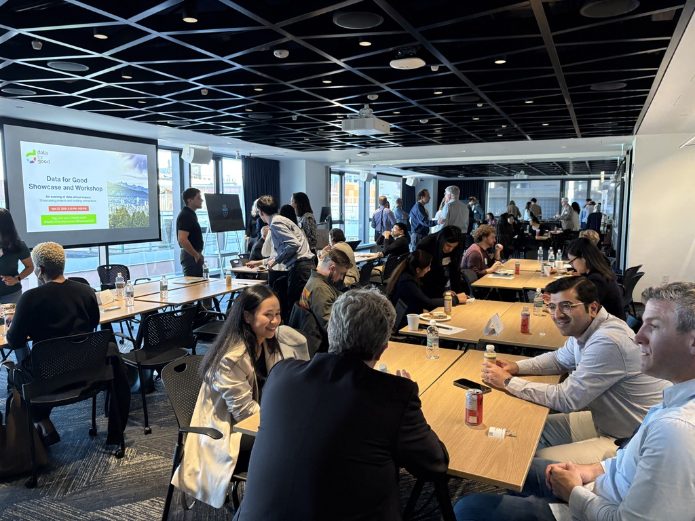
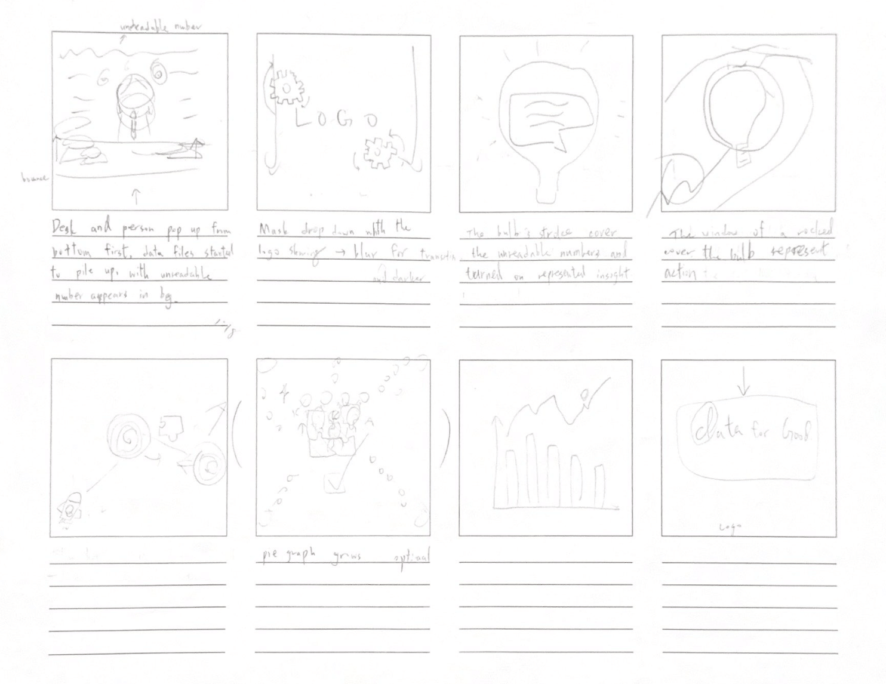
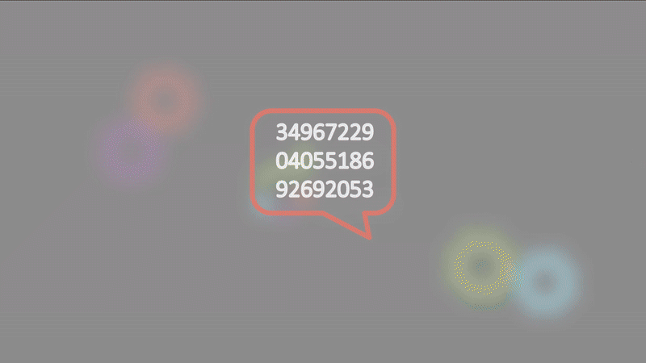
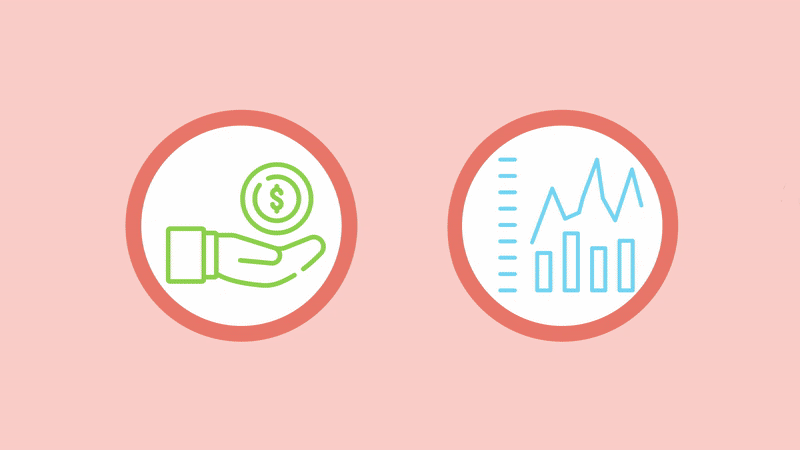
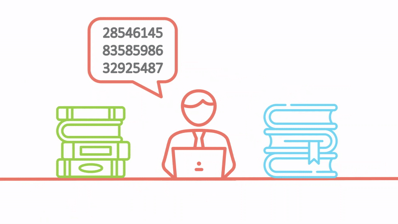
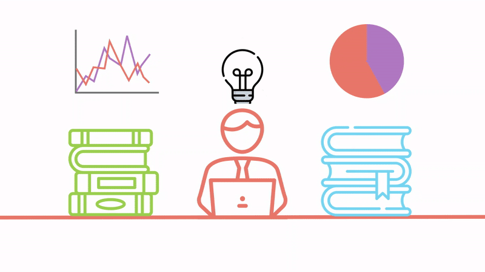

2025
Animation Video
After Effect, Photoshop, Audacity
Animator
The Promotional Video for Data for Good is a 2D animation made with After Effect. The animation is a marketing material of the Canadian non-profit organization -- Data for Good. It was designed based on the branding and the style guide of the organization, aiming to build public awareness toward Data for Good, and how data-driven decision could help other non-profits and charities.
Data for Good (DFG) founded in 2013, providing professional data solutions to community-based organizations completely free of charge—with the goal of creating meaningful, lasting impact.

I joined DFG in February 2025 as a Marketing Specialist, always searching for a compelling and creative way to build brand awareness and introduce DFG's vision to a wider community. My responsibilities included:
I assumed the role of creating DFG's social media platforms, with a focus on storytelling that highlighted real-world impact. My role involved crafting visually engaging narrative strategies across platforms to attract both volunteers and nonprofit collaborators, helping build a consistent and authentic brand presence.
From flyers and digital banners to event slides and video graphics, I created branding elements that were not only visually aligned with DFG's identity but also communicated data-driven stories clearly and accessibly. This design work laid the visual groundwork for the promotional animation, inspiring the direction and tone of the final video.
To better understand our audience, I conducted informal user behavior research and engagement analysis on social platforms. By identifying what types of content resonated most effectively, I was able to strategically optimize visual storytelling approaches, many of which influenced how the animation was framed to reflect DFG's impact.
While developing the promotional animation for Data for Good, I was concurrently enrolled in a graduate-level animation course that shaped both my creative process and technical execution. My learning focused on:
I was taught to approach animation as a problem-solving tool, applying interdisciplinary methodologies that synthesized principles to communicate complex ideas—particularly valuable when translating data concepts in a way.
The course emphasized Human-Computer Interaction (HCI) and guided me through, guiding me to design movement, transitions and visual hierarchies using intuitive and audience-aware—principles I applied in crafting the final video.
From storyboarding to animating with tools like Adobe Animate and After Effects, I learned how to effectively merge creative storytelling with technical precision. This allowed me to transform abstract ideas into a coherent and emotionally engaging animation.
Create an engaging and accessible video that introduces the organization in a way that's easy to understand and captures people's interest.
Apply appropriate tools and methods to produce a smooth and visually cohesive animation.
Explore how animation can support branding and storytelling for a non-profit organization, especially one still building local awareness.
I started with sketch the script in the format of a 10 slides storyboard.

All assets are collected from various sources to align the concept and the style guide of the video.
Graphics and illustrations are either custom-designed or sourced from licensed repositories to maintain a consistent and minimal visual style. Visuals were selected to clearly communicate abstract ideas, such as data flow and social impact, in a friendly and accessible way.
The soundscape includes both background music and voiceover, carefully crafted to enhance the emotional and stylistic tone of the animation.
For music, I implemented Suno AI, using the prompt: “an instrumental background track with a futuristic and minimalist feel” to generate a sound that aligns with the project's clean and data-forward aesthetic.
For the voiceover, I used ElevenLabs, an AI voice generator, adjusting tone and accent to ensure that the narration felt natural, clear, and aligned with the video’s visual and emotional rhythm.
Animations were designed with smooth, linear transitions and simple, symbolic movement to emphasize clarity over complexity. Techniques like easing, masking, and timed text animation were used to maintain a calm, informative flow, matching both the educational tone and brand voice of Data for Good.
Different animation techniques were implemented to effectively communicate Data for Good's mission and services through visual storytelling.
To symbolize the spark of insight leading to action, I created a sequence where a light bulb illuminates and transforms into a rocket. This visual metaphor uses ease-in-out for the bulb, and parallel staggered movement to create a sense of momentum and transition.

Techniques: Easing Function (Ease-In-Out), Motion Blur, Parallax Scroll Movement
To visualize DFG's service delivery in a dynamic, abstract solution, I morphed floating service bubbles into interlocking puzzle pieces. Each bubble follows an organic floating animation, and then undergoes a shape-tweening transformation, with bouncy timing animations, and opacity blending, creating a smooth metaphorical transformation.

Techniques: Shape Tweening, Layers Scaling, Opacity Blending
To illustrate Data for Good's problem-solving impact, I animated a branded eraser wiping away chaotic, messy data visualizations. The eraser glides smoothly with a slight bounce effect, while the scattered elements into clean, structured data visualizations with a sequential reveal.

Techniques: Mask Animation, Object Reveal, Sequential Line Revealing
The animation concludes with a camera tilt showing the complete DFG logo and tagline. This sequence uses parallax transitions, vertical parallax movement, and soft fade-ins to create a dynamic, memorable ending that leaves a lasting impression.

Techniques: Scale-up Motion, Camera Movement, Soft Fade Transitions
Learned how animation can be an effective and engaging medium for promoting an organization—especially when trying to explain abstract concepts.
The importance of aligning visuals and storytelling were emphasized, for creating animations that actually resonate with what the viewer or client truly wants.
Continue refining the video based on feedback from both the organization and viewers to make the message clearer and the impact stronger.
In future versions, I'd like to push the brand visuals further—building a more cohesive visual language throughout that reflects the tone and values of the organization.